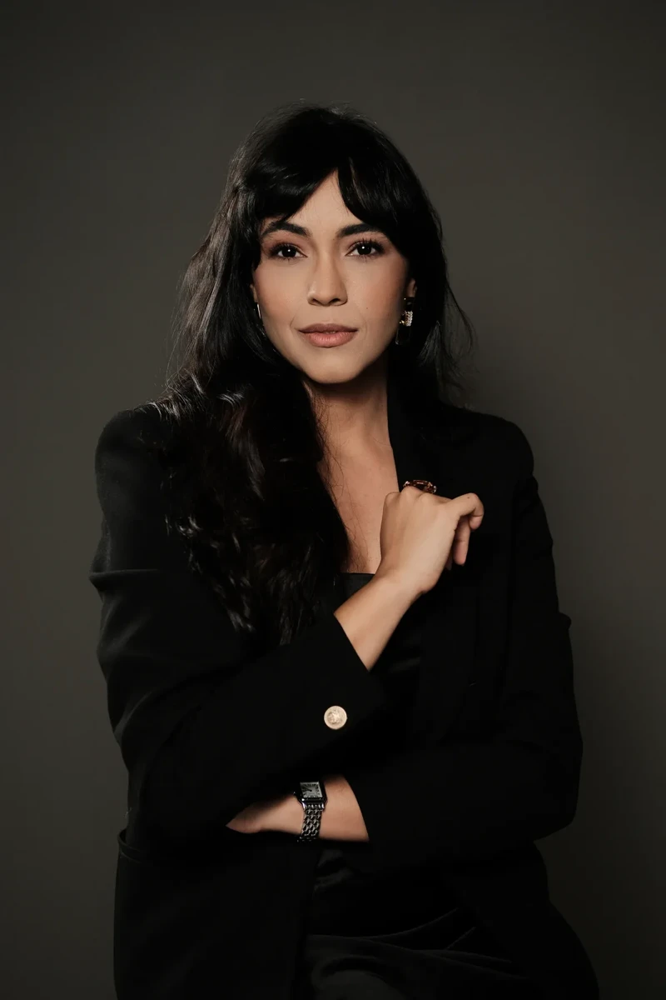
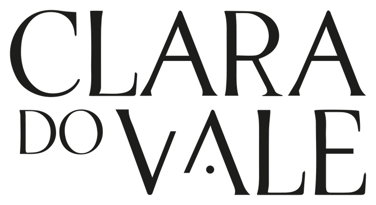
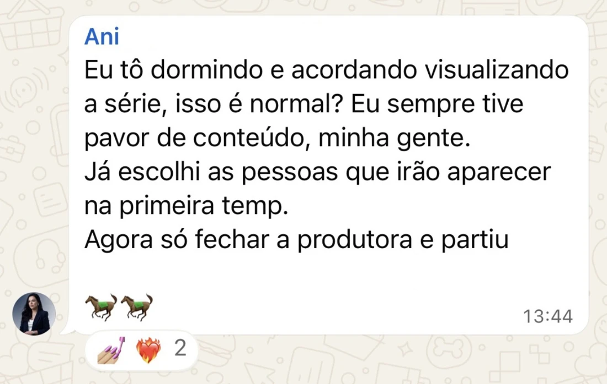
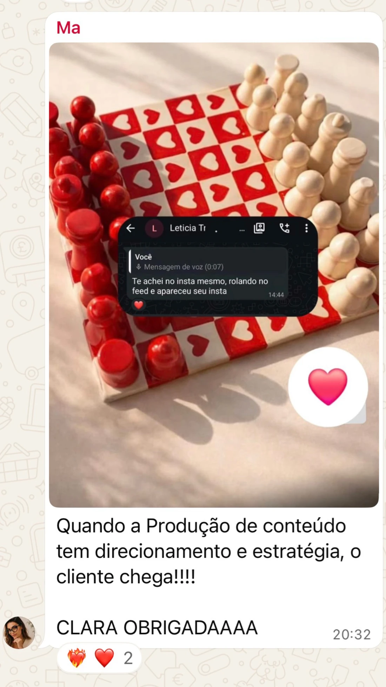
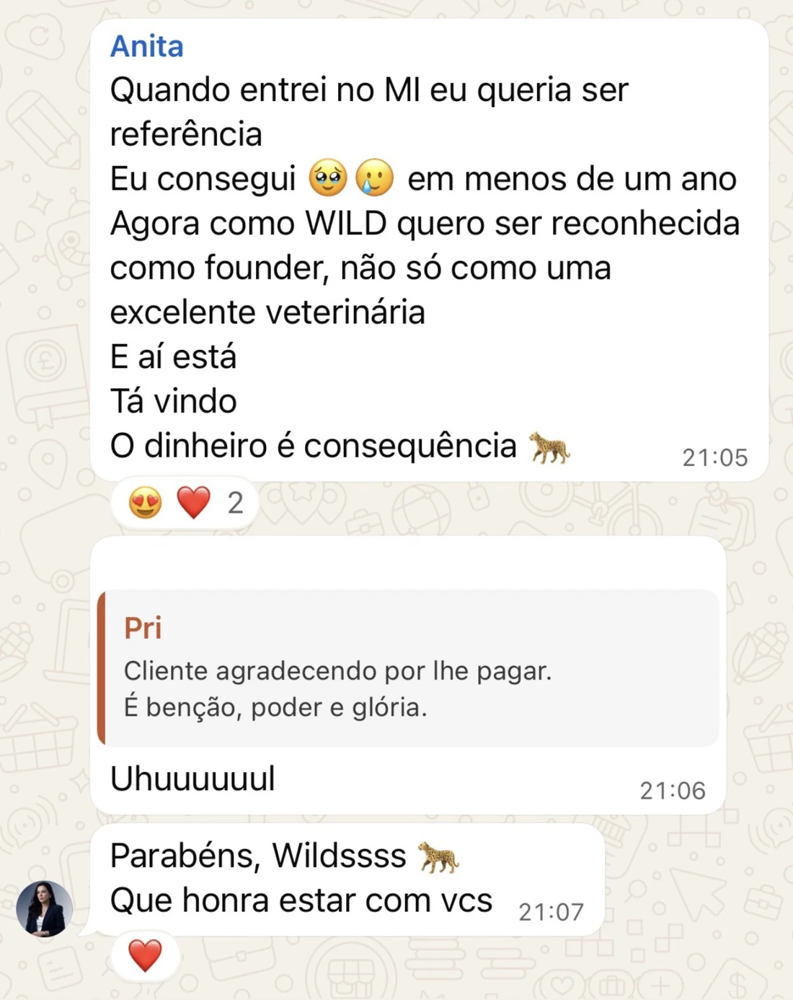
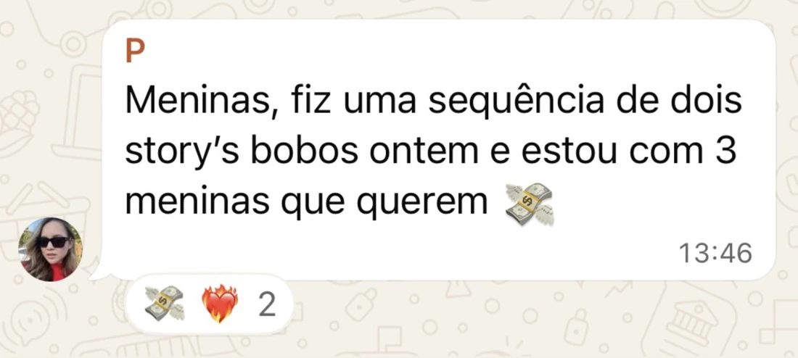
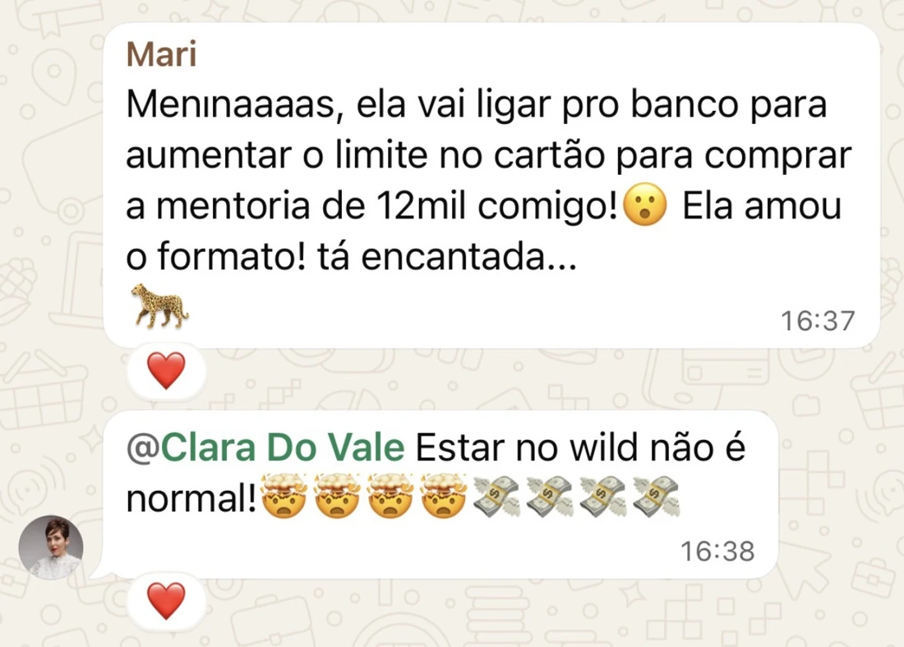
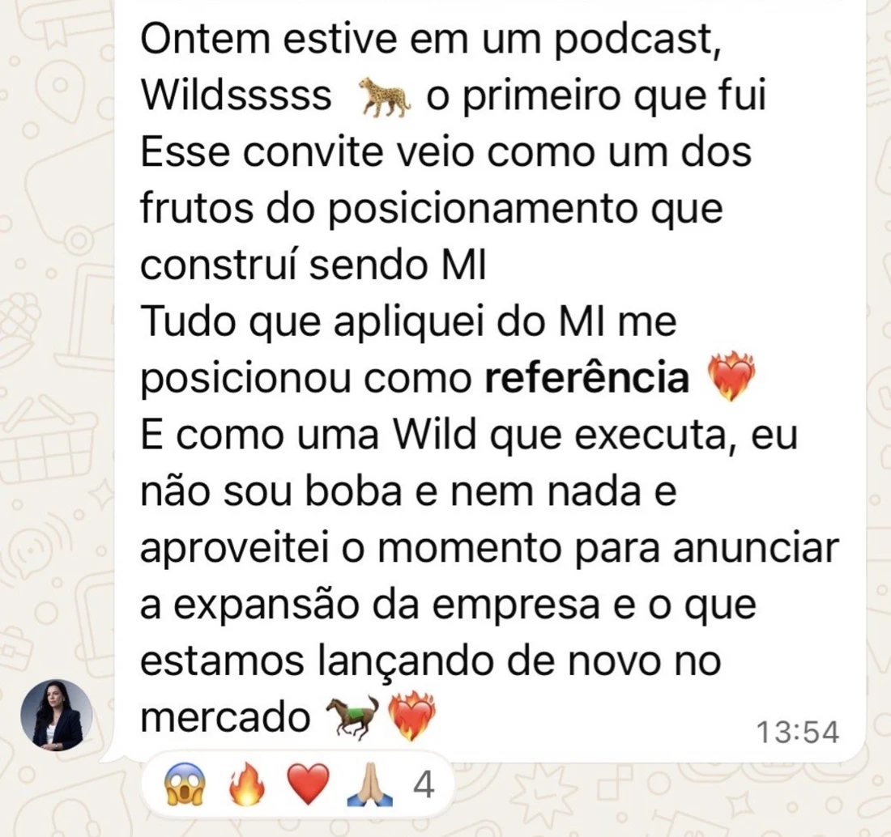
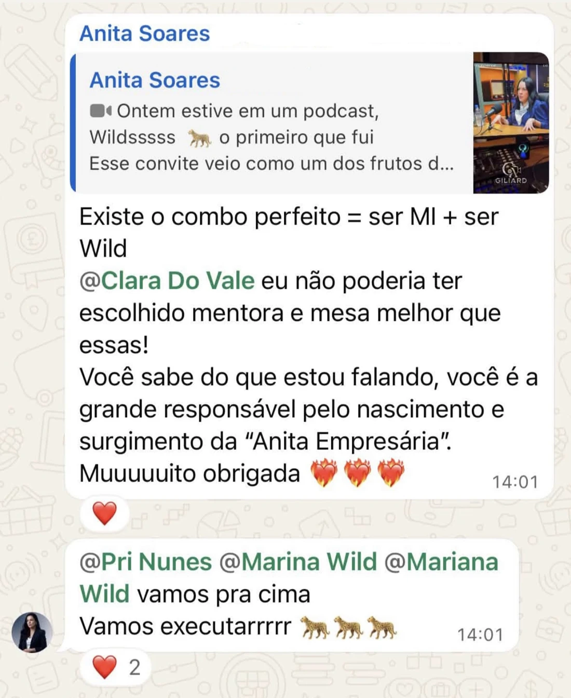

UM ENCONTRO COM A FILOSOFIA WILDEXCLUSIVO PARA EMPRESÁRIAS COM NEGÓCIO VALIDADO
WILD CLASS
Seu negócio não precisa de mais esforço. Precisa de direção.
Para empresárias com operação validada e decisões de expansão sobre a mesa. Conheça a Filosofia WILD com Clara do Vale e dê direção ao seu próximo movimento.
26 DE SETEMBROAO VIVO NO ZOOMSEM REPLAY
Este encontro não é para quem está começando ou ainda não tem um negócio.
DENTRO DO UNIVERSO WILD
Menos discurso.
Mais movimentos reais.
Registros de empresárias que vivem o WILD CLUB. Veja o que muda quando as decisões encontram direção.

Ampliar registro ↗Ampliar registro ↗
Ampliar registro ↗
Ampliar registro ↗Ampliar registro ↗Ampliar registro ↗
Ampliar registro ↗
Ampliar registro ↗Ampliar registro ↗Ampliar registro ↗
Ampliar registro ↗Ampliar registro ↗
Ampliar registro ↗Relatos individuais do WILD CLUB, não promessas da WILD CLASS.
NÃO É SOBRE COMEÇAR. É SOBRE O QUE VEM AGORA.
Você traz a ambição.
O próximo passo pede visão.
Na WILD CLASS, Clara do Vale apresenta a Filosofia WILD: uma forma de olhar para o negócio, reconhecer o que pede prioridade e conduzir o próximo movimento com mais clareza.
Um encontro para empresárias que já têm uma operação, vendas e decisões reais sobre a mesa. Ao vivo no Zoom, sem replay.
Quero conhecer a Filosofia WILD